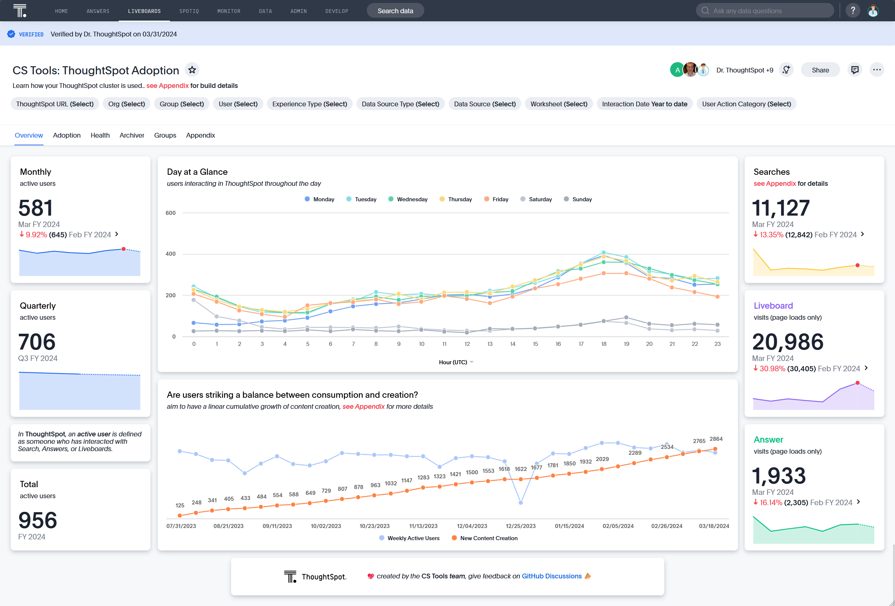

v1.5.0
Lots of Organization
Minimum Supported ThoughtSpot version
The minimum supported ThoughtSpot version has been raised to 9.0.1.
Minimum Supported Python version
The minimum supported python version has been raised to 3.9.0.
Check out the highlights of our latest CS Tools release!
The multi-tenancy feature logically partitions a ThoughtSpot cloud instance into multiple tenant-specific environments called Orgs. With Orgs, each tenant’s data is isolated and protected with access control, and is invisible to the other tenants that share the same ThoughtSpot application instance.
If the Orgs feature is enabled on your instance, your cluster administrator can create an Org for each tenant account, configure groups and users, and control access to data objects. Each Org serves as an independent container with its own set of users and data, and provides the same user experience as that of a regular ThoughtSpot instance.
With CS Tools 1.5.0 , you can now specify a default org in your Configuration file, or on popular commands that would need to be isolated to a single org.
Learn about how your Worksheets are being used! Here's some questions you can answer with this new Worksheet and Liveboard combo.
- What's the breakdown of columns in your Worksheet?
- Are there any columns which aren't seeing any use?
- Have you exposed any Hidden columns, which are unintentionally locking dependencies?
- Come to think of it, just how many dependencies are there on this Worksheet?
- Who is creating content that's being heavily used by others?


Learn about how well your Cluster is being adopted! Here's some questions you can answer with this new Worksheet and Liveboard combo.
- When do Users log in and interact with ThoughtSpot?
- What does my Month Active Users look like on Mobile? How about for Search?
- How many Users are losing or re-engaging on the platform?
- What does query latency look like in ThoughtSpot? Is anyone having a poor experience?
- Which Groups contribute the most activity in ThoughtSpot?



Syncers allow you to feed the data that CS Tools extracts into a file format or database.
In CS Tools 1.5.0, we've added more formats with plans to expand to even more.
New Syncers
All Database Syncers now has a new LOAD_STRATEGY. Before 1.5.0 , you could only APPEND or TRUNCATE into a database table. That made inserting historical data like TS: BI Server, Audit Logs, or Embrace Query Stats into the database clunky and cumbersome.
With the latest release, we add a UPSERT option to all database syncers so you can now run your ETL jobs with less care!
Many Syncer arguments have changed!
The Syncer documentation has been revamped, visit the Syncers documentation page to see how.
If you want to run CS Tools from a serverless environment, you can skip installing from the bootstrapper and instead install the python package directly.
Here are some examples.
actions-workflow.yaml
name:
Extract data with CS Tools.
on:
schedule:
# Runs every day at 3:15 AM UTC
- cron: "15 3 * * *"
jobs:
extract_data_from_thoughtspot:
# Configure Environment Variables for CS Tools configuration
env:
CS_TOOLS_THOUGHTSPOT__URL: ${{ secrets.THOUGHTSPOT_URL }}
CS_TOOLS_THOUGHTSPOT__USERNAME: ${{ secrets.THOUGHTSPOT_USERNAME }}
CS_TOOLS_THOUGHTSPOT__SECRET_KEY: ${{ secrets.THOUGHTSPOT_SECRET_KEY }}
# CS_TOOLS_TEMP_DIR: ...
runs-on: ubuntu-latest
steps:
- name: Set up Python 3.12
uses: actions/setup-python@v4
with:
python-version: 3.12
- name: Install a specific version of CS Tools
run: python -m pip install https://github.com/thoughtspot/cs_tools/archive/v1.5.0.zip[cli]
# --config ENV: tells CS Tools to pull the information from environment variables.
- name: Run your CS Tools Command
run: "cs_tools config check --config ENV:"
Your platform
Windows
The new Windows Terminal runs CS Tools beautifully.
Mac OS
The default terminal app is limited to 256 colors. We recommend installing a newer terminal such as iterm2, Kitty, or WezTerm.
Linux (all distros)
All Linux distros come with a terminal emulator that can run CS Tools.
Follow the steps below to get the latest CS Tools V1.5.0 installed on your platform!
Open up Windows Terminal or Powershell.
Find the copy button to the right of the code block.
(Invoke-WebRequest `# (1)!
-Uri https://raw.githubusercontent.com/thoughtspot/cs_tools/master/cs_tools/updater/_bootstrapper.py `
-UseBasicParsing `
).Content | python - --reinstall # (2)!
Invoke-WebRequestis likecurl, but for Windows. It will download a file from the URL specified.- The
IWRresponse is sent or "piped" topythonfor install.
Open up a new Terminal window.
Find the copy button to the right of the code block.
curl \
--silent --show-error --location-trusted \
https://raw.githubusercontent.com/thoughtspot/cs_tools/master/cs_tools/updater/_bootstrapper.py \
| python3 - --reinstall # (2)!
- These are the longhand form of the
-sSLflags. - The
curlresponse is sent or "piped" topythonfor install.
command not found: python3
If you see this error in your terminal, try using python instead of python3 above.
We strongly recommend against this option. Your ThoughtSpot cluster is a production system serving your entire user community. While CS Tools is not a resource-hungry application and only runs for short periods of time, it should ideally be run from another machine.
Find the copy button to the right of the code block.
curl \
--silent --show-error --location-trusted \
https://raw.githubusercontent.com/thoughtspot/cs_tools/master/cs_tools/updater/_bootstrapper.py \
| python3 - --reinstall # (2)!
- These are the longhand form of the
-sSLflags. - The
curlresponse is sent or "piped" topythonfor install.
command not found: python3
If you see this error in your terminal, try using python instead of python3 above.
- support for ThoughtSpot Orgs in Config file
cs_tools self sync- to align the underlying dependencies without requiring an update of CS Tools itself- a new tool for interacting with the ThoughtSpot Git APIs
- support pulling from ENVIRONMENT_VARIABLES for the CS Tools config
- CS Tools Searchable additional tables (
TS_CLUSTER,TS_DATA_SOURCE,TS_ORG,TS_XREF_ORG) - CS Tools Searchable Spot App: Worksheet Column Utilization
- CS Tools Searchable Spot App: ThoughtSpot Adoption
- noisiness of the analytics capture ~ now with more silence ~
- gave
cs_tools tools bulk-deletera confirmation gate so users don't accidentally delete large quantities of content
- tons of minor fixes for Scriptability and parent library
thoughtspot_tml - fix for #63 , #64 , #66 , #71 , #72 , #81 , #93 , #94 , #95
- bugfixes to [optional] analytics data capture
- temporarily removed BigQuery Database Syncer
- all private APIs have been removed from CS Tools
- added support for V2.0 REST APIs
- the minimum supported version of ThoughtSpot is now 9.0.1
- switched to
pytestframework for testing - switched to
rufffor code quality - separated the cs_tools core from the cs_tools CLI
- bump
pythonversion to 3.9, adding support through the latest version - bump
httpx >= 0.27.0 - bump
pydantic >= 2.6.4 - bump
sqlmodel >= 0.0.16(sqlalchemy >= 2.0.0) - bump
typer >= 0.12.0 - bump
pendulum >= 3.0.0